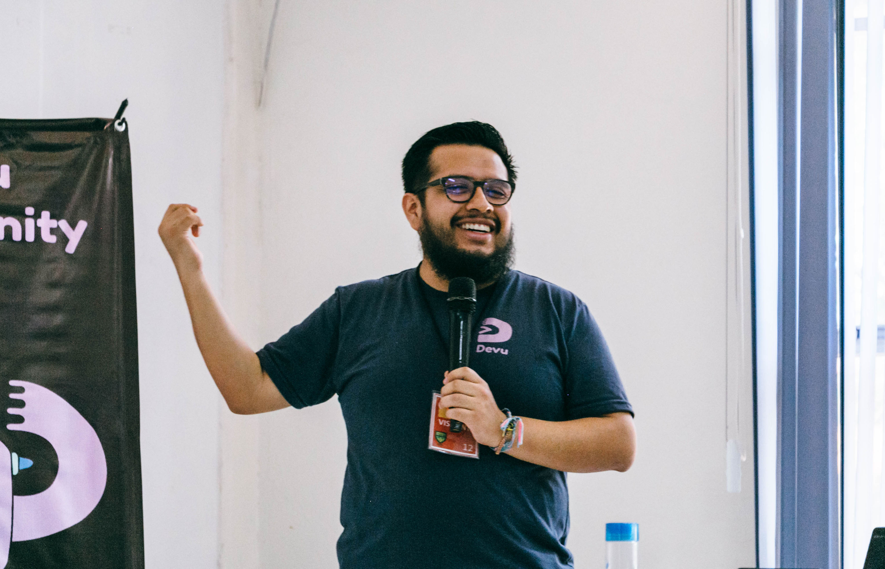

Aprendiendo DevOps
Soy desarrollador fullstack con +6 años de experiencia, mi puesto actual es SCM Git y GitHub.
Actualmente me encuentro certificado en GitHub Foundations y GitHub Actions, estoy buscando aprender sobre el área DevOps por este motivo arranco este bootcamp con Codigo Facilito.
Placeholder para futuro proyecto DevOps.
Placeholder para futuro proyecto DevOps.
Placeholder para futuro proyecto DevOps.